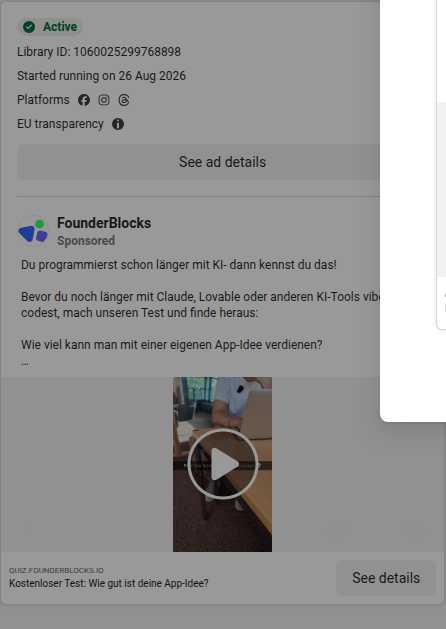
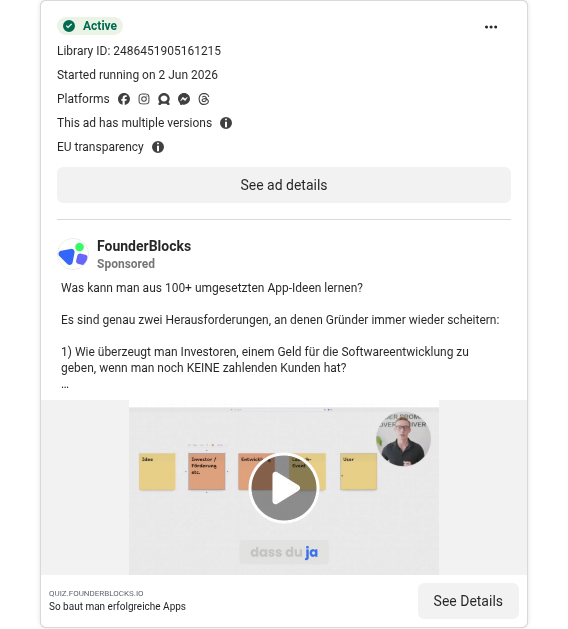
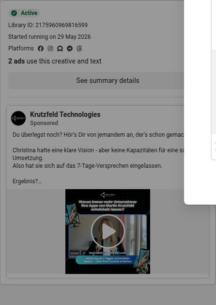
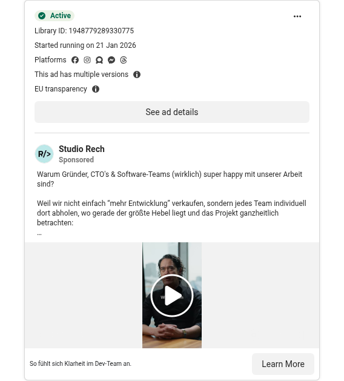

Stand 11. Oktober 2026 Vertrauliche Entscheidungsvorlage
Was relevante Wettbewerber verkaufen
Meta / Facebook: Originalanzeigen, Mechanismen, Funnel-Analyse und sechs konkrete Creative-Konzepte für NXT.
Belegt: fünf Dienstleistungsanbieter plus ein Vergleichsportal.
Tradingtwins wird nicht als sechste Entwicklungsagentur ausgegeben. Keine Ausgaben-, CPL- oder ROAS-Daten. Die visuelle Vollanalyse ist nicht verifiziert; Text-Hooks sind keine gesprochenen Video-Hooks.
Creative-Atlas
Elf gesicherte Motive und Videoposter. Eine strategische Stichprobe, kein Performance-Ranking. Die Detailanalyse folgt vollständig darunter.
App- und Softwareentwicklung · Deutschland · Recherche vom 11. Oktober 2026
Ergebnis und Reichweite
11 einzeln geprüfte, als aktiv angezeigte Meta-Anzeigen von sechs relevanten Werbetreibenden; davon fünf Entwicklungs-/Beratungsanbieter und ein Agenturvergleichsportal. Zusätzlich enthält das Rechercheinventar 70 unterschiedliche, in Deutschland-gefilterten Bibliothekslisten beobachtete Anzeigen-IDs. Diese 70 sind eine Recherche-Stichprobe, weder vollständige Accountbestände noch 70 unterschiedliche kreative Konzepte. Für alle elf ausgewählten Anzeigen wurden die konkrete ID, der Aktivstatus und der Text in einem zweiten Browserabruf geprüft und Bild-/Videodateien sowie Screenshots gesichert. Die Details stehen jeweils bei der Anzeige.
Die wichtigste Erkenntnis: In dieser Stichprobe verkauft die relevante Konkurrenz nicht primär Programmierstunden. Sie verkauft eine bessere Entscheidung vor dem Bauen, schnelle Überprüfung einer Idee, wirtschaftlich wirksame Entwicklung oder planbare Umsetzung. NXT sollte deshalb nicht nur „Wir entwickeln Apps“ behaupten, sondern einen konkreten Unsicherheitsfaktor des Käufers sichtbar beseitigen. Das ist eine strategische Interpretation der untersuchten Beispiele, keine Aussage über den gesamten Markt.
FounderBlocks ist als passender Anbieter bestätigt. Offizielle Website, App-/SaaS-Angebot und Werbebibliothek passen zum mutmaßlich gesprochenen „Founder Blogs“. Die ursprüngliche Audiointention lässt sich daraus nicht beweisen; der Markenname im Bericht lautet bewusst FounderBlocks, nicht automatisch korrigiertes „Founder Blogs“.[22][25]
Kein Performance-Ranking: „Stark“ und die Scores dieses Berichts bedeuten strategisch interessant für NXT, nicht bewiesenen ROAS, niedrigen CPL oder hohe Abschlussquote. Wir haben keine Ad-Account-Performance, keine Ausgaben, keine Conversiondaten und kein verifiziertes Targeting. Lange Laufzeit, viele IDs und verschiedene Varianten sind keine Performancebeweise.
Evidenzgrade und Grenzen
E1 – ausgewählte Anzeige: Liste mit Filter Deutschland + individueller Browser-Readback mit derselben ID, eigener Zeitstempel, Aktivstatus, Copy, Screenshot und Creative-Datei. Elf Beispiele erfüllen diesen Standard.
E2 – ergänzende Stichprobe: ID und Aktivstatus aus Live-Library-Listen; keine vollständige Einzelprüfung aller 70 IDs. Die elf E1-Beispiele sind darin enthalten, nicht zusätzlich zu addieren.
E3 – Funnel: tatsächlich gelesene Zielseite. Website-Claims sind als Anbieterangaben zu verstehen. Kein Formular wurde abgesendet, kein Termin gebucht, keine Anfrage ausgelöst.
Interpretation: Zielgruppenhypothesen, Stärken/Schwächen, Scores und NXT-Adaptionen sind Analystenurteile. Ein CTA oder eine Formulierung beweist weder Retargeting noch tatsächliche Zielgruppeneinstellungen.
Creative-Grenze: Originalbilder, Poster und sechs vollständige Videodateien sind gesichert. Eine automatische Bildanalyse scheiterte am Vision-Provider. OCR-Texte sind separat als nicht visuell gegengeprüft markiert. Es gibt keine vollständigen Video-Transkripte und keine erfundenen Aussagen über Kamera, Szenenfolge, Sprecheridentität oder gesprochenen Hook. Der Hook im Bericht ist grundsätzlich der Text-Hook der Anzeige.
Deutschlandbezug: Deutschland war als Bibliotheksfilter gesetzt und im finalen Browser-Readback sichtbar. Daraus folgt kein Sitz des Anbieters in Deutschland und keine Aussage „ausschließlich Deutschland“. Insbesondere bluesource wird als Wettbewerber im deutschen Werbemarkt behandelt, nicht als behauptetes deutsches Unternehmen.
Wettbewerbslandkarte
Anbieter
Rolle in der Kaufentscheidung
Nachgewiesenes Einstiegsangebot
Besonders relevant für NXT
Abgrenzung
FounderBlocks
Startup-Studio; Umsetzung plus Gründungs-/Produktbegleitung
Ideen-Quiz, Roadmapping-Call
Nicht-technische Gründer; von KI-Demo zu marktfähigem Produkt
Website-Claims zu profitablen Unternehmen und Projekterfahrung nicht unabhängig geprüft
Krutzfeld Technologies
Technischer Sparrings- und Umsetzungspartner
Strategiegespräch; 7-Tage-Anwendung mit Garantieclaim
Unternehmer mit konkreter Idee; schnelle Validierung
Zielseite fragt nach mindestens 10.000 € Monatsumsatz; Prototyp und Vollprodukt differenzieren
Studio Rech
Entwicklungs- und Produktpartner für bestehende Teams
30-Minuten-Analyse
CTO-/Team-Segment; Priorisierung, Qualität und wirtschaftliche Wirkung
Nicht nur ein „App für Gründer“-Anbieter; stärker bestehende Entwicklung
bluesource
Spezialisierte App-/Softwareentwicklung für Banking
Expertengespräch
Vertikale Positionierung und Integration statt Preiswettbewerb
Andere Buyer-Komplexität; nicht blind auf frühe Gründer übertragbar
L-One Systems
Individualsoftware mit Kosten-/Prozessfokus
Gespräch zur Entwicklung zum Festpreis
Mittelstand, Budgetplanbarkeit, Wartbarkeit
Konkreter externer Funnel nicht verifiziert; Bibliothek zeigt fb.me
Tradingtwins
Vergleichs-/Leadportal für Agenturangebote
Agenturvergleich
Konkurriert um dieselbe kaufnahe Anfrage und prägt Angebotserwartungen
1. Der erste beworbene Schritt ist in mehreren ausgewählten Anzeigen eine Diagnose oder ein Klärungsgespräch, nicht unmittelbar ein Entwicklungsauftrag. Ob daraus ein bezahlter Erstkauf entsteht, ist nicht belegt. FounderBlocks nutzt ein Ideen-Quiz, Krutzfeld fragt nach Scope, Studio Rech nach wirtschaftlicher Priorisierung. Die Einstiegsschwelle wird durch Diagnose verkleinert. NXT sollte dabei nicht einfach einen beliebigen Quiz-Funnel kopieren: Ein Leadmagnet ist nur sinnvoll, wenn seine Auswertung zum späteren Angebot und zur echten Lieferfähigkeit passt.[25][23][29]
2. KI verändert die Alternative, gegen die Anbieter argumentieren. Bei FounderBlocks ist der Interessent bereits Vibe-Coder, bei L-One macht KI Individualentwicklung aus Anbietersicht kalkulierbarer. Das schafft zwei verschiedene NXT-Einstiege: „Demo produktionsreif bekommen“ versus „Budget und Scope zuverlässig planen“. Die beiden sollten nicht zu einem unscharfen KI-Versprechen vermischt werden.[25][32]
3. Risiko wird konkreter formuliert als reine Qualität. Sieben Tage, Rückzahlungsversprechen, Kostengarantie und definierte Gespräche sind leichter vorstellbar als „innovativ und kundenorientiert“. NXT kann Präzision übernehmen, ohne fremde Garantien zu übernehmen.[24][32][28]
4. Branchenfokus wird in derselben Anzeigenbibliothek eingesetzt, adressiert aber andere Käufer. bluesource spricht Banking-Institute und Integrationsbedarf an. Das ist als Positionierungsprinzip wertvoll; es ist kein Beleg dafür, dass eine solche Anzeige für NXT-Gründerangebote konvertiert.[26][30]
5. Vergleichsplattformen verändern den Referenzrahmen. Tradingtwins verkauft Anbieterwahl statt Entwicklung aus eigener Hand. NXT muss daher nicht nur gegen andere Agenturen argumentieren, sondern auch erklären, warum ein direktes fachliches Gespräch vor einer Angebotsrunde sinnvoll sein kann.[27][20]
Vergleichsmaßstab
Jede Anzeige erhält fünf gleich gewichtete Noten von 1 bis 5. Maximal 25 Punkte; keine statistische Präzision, keine Leistungsprognose. Die Summe ist lediglich eine transparente Priorisierung für die Creative-Konzeption.
Kriterium
1 Punkt
3 Punkte
5 Punkte
H: Problem-/Hook-Präzision
generisch, austauschbar
Problem erkennbar
konkreter Moment + Selbstselektion
O: Angebotsklarheit
unklarer nächster Schritt
Gespräch/Leistung verständlich
Output, Aufwand und nächsten Schritt präzise
B: Beleg-/Mechanismusqualität
bloßes Adjektiv
Erfahrung oder plausibler Mechanismus
konkret nachvollziehbarer Beleg und Mechanismus
F: Funnel-Anschluss
Ziel unklar/abweichend
grob passend
Botschaft und nächster Schritt konsistent
N: Übertragbarkeit auf NXT
kaum passend
segmentabhängig
unmittelbar in eigene belegbare Demo/Proof übersetzbar
Die Belegnote bewertet, wie konkret die Anzeige einen Beleg präsentiert; sie bestätigt nicht die Wahrheit aller Werbeclaims. Die Funnel-Note ist bei fehlender Auflösung ausdrücklich konservativ. Visuelle Gestaltung wird nicht numerisch benotet, weil keine zuverlässige Bild-/Videovollanalyse vorliegt.
Anzeigenvergleich
ID
Anbieter / Ansatz
H
O
B
F
N
Summe
1060025299768898
FounderBlocks – Vibe-Coding-Frust zum Ideen-Quiz
5
5
4
4
5
23/25
2175960969816599
Krutzfeld Technologies – Kundenstimme zum 7-Tage-Angebot
4
5
4
4
5
22/25
1948779289330775
Studio Rech – Nicht mehr entwickeln, das Richtige entwickeln
4
4
4
5
5
22/25
1052141820726478
Krutzfeld Technologies – 7 Tage plus Rückzahlungsversprechen
5
5
3
4
4
21/25
2486451905161215
FounderBlocks – Launch-Methode und Investorenfrage
bluesource - mobile solutions gmbh – Banking-Spezialisierung und Erfahrung
3
4
4
5
3
19/25
2414804685705847
L-One Systems GmbH – Individuelle Software zum Festpreis
4
5
3
2
5
19/25
1705064203993490
FounderBlocks – Direkter Roadmapping-Call
3
4
3
4
4
18/25
1995628157986808
bluesource - mobile solutions gmbh – Banking-App als Geschäftsinstrument
3
3
3
5
3
17/25
1654475309014747
Tradingtwins – Firmen-App über Agenturvergleich
3
4
2
4
3
16/25
Priorisierung für NXT: Der Vibe-Coding-Kontext von FounderBlocks, die wirtschaftliche Priorisierung von Studio Rech und die Kundenstimmen-Logik von Krutzfeld liefern die stärksten Ausgangspunkte in dieser Auswahl. Das sind unterschiedliche Hebel und kein universeller Anzeigengewinner.
1. FounderBlocks – Vibe-Coding-Frust zum Ideen-Quiz
Library-ID:1060025299768898 · Format: video · Start laut Library: Aug 26, 2026 · Status: Active · Deutschlandfilter: Germany · Einzelprüfung: 2026-10-11T09:54:48.974505+00:00.[25][21]
Isolierten Library-Screenshot ansehen

Gesichertes Originalvideo abspielen
Kein geprüftes Transkript vorhanden. Gesprochene Aussagen wurden nicht als Belege ausgewertet.
Mediendauer laut Browser: 59.84 Sekunden; nicht mit der in der Copy genannten Dauer einer Teil-Erklärung gleichsetzen.
Text-Hook: Du programmierst schon länger mit KI- dann kennst du das![25][21]
Angebot: Kostenloser App-Test; Auswertung in drei Minuten, Potenzialbewertung und Umsetzungstipps. Die Copy stellt sieben Kriterien sowie 130+ Projekte, sechs Verkäufe und über 12 Mio € Funding als Eigenclaims dar.[25][21]
Zielgruppe – ausdrücklich Hypothese: Hypothese: nicht-technische Gründer und Professionals, die bereits mit Claude, Lovable, Cursor, Replit oder Base44 arbeiten, aber Marktpotenzial und nächste Schritte nicht kennen.
Strategischer Ansatz: Vom Bauen zum wirtschaftlichen Sinn. Produktnutzung als Selbstidentifikation, anschließend niedrigschwellige Diagnose statt sofortiger Agenturverkauf.
Stärke – Analystenurteil: Aktueller und präziser Problemkontext. Toolnamen funktionieren als Selbstselektion. Quiznutzen und Aufwand sind klar und das Ziel passt zum Versprechen.
Schwäche / offene Prüfung: Die Copy erwähnt eine Erklärung in 31 Sekunden; die ausgelieferte Videodatei dauert ungefähr eine Minute. Das ist nicht zwingend ein Widerspruch, sollte aber nicht als 31-Sekunden-Video katalogisiert werden. Anzeige spricht von sieben Kriterien, Quiz-FAQ von acht. Potenzialscore ist kein Beweis für späteren Umsatz.[25][21]
Was NXT adaptieren kann: NXT: Launch-Readiness statt pauschaler Ideenwert. Zeige den Unterschied zwischen funktionierendem Demo-Screen und zahlungsfähiger Produktion anhand von Auth, Payments, Logging und Deployment. CTA: technische Lücken priorisieren.
Rubrik H/O/B/F/N: 5/5/4/4/5 · Summe 23/25. Keine Performancebewertung.
Gesicherte Anzeigen-Copy im Wortlaut
Du programmierst schon länger mit KI- dann kennst du das!
Bevor du noch länger mit Claude, Lovable oder anderen KI-Tools vibe-codest, mach unseren Test und finde heraus:
Wie viel kann man mit einer eigenen App-Idee verdienen?
Dieser Test zeigt Leuten mit App-, SaaS, oder KI-Tool Idee gerade, was ihre Idee wirklich wert ist. In 31 Sekunden zeige ich dir, wie der Test funktioniert und warum er besser als die meisten KI-Tools oder monatelanges Grübeln ist.
Er ist perfekt für alle, die schon mit KI-Tools wie Lovable, Cursor, Replit, Base44 oder anderen KI-Coding Tools an ihrer App-, SaaS-, oder KI-Tool Idee gearbeitet haben.
Und sich schon länger fragen:
Wie viel Potenzial hat meine App-Idee wirklich?
Wie viel kann ich mit meiner App-Idee verdienen?
Wie kann ich meine App-Idee am besten umsetzen?
Nachdem wir 130+ Apps, SaaS & KI-Tools an den Markt gebracht haben, 6 Unternehmen verkauft und über 12 Mio€ an Funding begleitet haben, haben wir etwas entdeckt:
Es gibt 7 Kriterien, die alle erfolgreichen Apps erfüllen.
Das sind die gleichen Kriterien, die auch Investoren überprüfen.
Wenn du also keine Lust mehr auf monatelanges Programmieren mit KI und Unsicherheit hast, ob deine App-, SaaS-, oder KI-Tool Idee wirklich funktioniert, mach einfach unseren App-Test.
Damit kannst Du die 7 Kriterien für deine App-Idee ganz einfach selbst überprüfen:
Zielgruppe – ausdrücklich Hypothese: Hypothese: nicht-technische Gründer mit höherer Gesprächsbereitschaft als Quiznutzer. Retargeting ist denkbar, aber nicht belegt.
Stärke – Analystenurteil: Klarer CTA und expliziter Gesprächsinhalt. Das Angebot adressiert die Suche nach Umsetzungspartnern und nicht nur Informationsbedarf.
Schwäche / offene Prüfung: Breiter Einstieg und viel Unternehmensversprechen. OCR des Stillmotivs zeigt ältere Erfahrungszahlen als die neuere Copy anderer Anzeigen; kein Beweis falscher Angaben, aber ein Hinweis auf uneinheitliche Creative-Versionen. Künstliche Knappheit vermeiden.[28]
Was NXT adaptieren kann: NXT: Konkreten Output des Erstgesprächs zeigen: ein priorisierter erster Use Case plus Risiken und offene Fragen. Nur das versprechen, was im Call tatsächlich geliefert wird.
Rubrik H/O/B/F/N: 3/4/3/4/4 · Summe 18/25. Keine Performancebewertung.
Gesicherte Anzeigen-Copy im Wortlaut
Du hast eine Idee für eine App Software oder ein KI-Tool?
Du suchst nach einen Partner, der dir hilft, die Idee umzusetzen?
Wir helfen nicht-technischen Gründern, ihre Idee in ein profitables Software-Unternehmen zu transformieren.
➡️ Wenn du mit deiner eigenen App-, Software-, oder KI-Tool Idee durchstarten möchtest:
Buch dir deinen kostenfreien Roadmapping-Call mit uns!
In dem Call bekommst du:
1) Eine ehrliche Einschätzung zu deiner Idee
2) Unseren Prozess, mit dem wir Nicht-Technische Gründer von Idee zu profitablem Software-Unternehmen bringen
Absolut kostenlos, aber die Plätze begrenzt.
Also, buch dir jetzt einen kostenfreien Call mit uns!p
3. FounderBlocks – Launch-Methode und Investorenfrage
Library-ID:2486451905161215 · Format: video · Start laut Library: Jun 2, 2026 · Status: Active · Deutschlandfilter: Germany · Einzelprüfung: 2026-10-11T09:55:08.870257+00:00.[33][21]
Isolierten Library-Screenshot ansehen

Gesichertes Originalvideo abspielen
Kein geprüftes Transkript vorhanden. Gesprochene Aussagen wurden nicht als Belege ausgewertet.
Zielgruppe – ausdrücklich Hypothese: Hypothese: ambitionierte App-/SaaS-Gründer, die Validierung, Begeisterung der Nutzer und Finanzierung gemeinsam lösen wollen.
Stärke – Analystenurteil: Konkrete Fragen zu Kapital vor ersten Kunden und Weiterempfehlung strukturieren den Lernnutzen. Der App-Test bietet nach der Erklärung einen nächsten Schritt.
Schwäche / offene Prüfung: Die gesicherte Videodatei ist über fünf Minuten lang; Eignung für kalten Traffic ist eine Testfrage, keine feststehende Stärke. Numerische Erfolgsclaims bleiben Anbieterangaben. Der Transcript-/Spoken-Hook wurde nicht geprüft.[33][21]
Was NXT adaptieren kann: NXT: Eine echte Projektentscheidung als 45–60-Sekunden-Fall erklären: Welche Annahme war falsch? Was wurde weggelassen? Was haben Nutzer tatsächlich getestet? In der Langfassung vertiefen statt kalte Kontakte sofort mit einem langen Lehrvideo zu belasten.
Rubrik H/O/B/F/N: 4/4/4/4/4 · Summe 20/25. Keine Performancebewertung.
Gesicherte Anzeigen-Copy im Wortlaut
Was kann man aus 100+ umgesetzten App-Ideen lernen?
Es sind genau zwei Herausforderungen, an denen Gründer immer wieder scheitern:
1) Wie überzeugt man Investoren, einem Geld für die Softwareentwicklung zu geben, wenn man noch KEINE zahlenden Kunden hat?
2) Wie sorge ich dafür, dass meine User so begeistert von meiner App sind, dass sie sie aktiv weiterempfehlen?
Die Lösung ist unsere Launch-Methode, die wir im Video beschreiben.
Wir haben über 100 Gründern geholfen, ihre App-, Software- oder KI-Idee zu validieren, zu entwickeln und so zu skalieren, dass sie sich rechnet – auch für Investoren.
✅ In 9 Jahren haben wir über 100 Apps gebaut.
✅ Unsere Kunden haben zusammen mehr als 10 Millionen Euro von Investoren bekommen.
✅ Über uns wurde in bekannten Medien berichtet - wie Gründerszene, Business Insider und Forbes.
Das erzählen wir nicht zum Angeben. Sondern um dir zu zeigen: Es ist möglich!
Du hast auch eine Idee? Finde jetzt mit unserem App-Test heraus, wie viel Potential in deiner Idee steckt.
Im Test werden die 7 elementaren Merkmale von guten App-Ideen analysiert. Der App-Test sagt dir:
Zielgruppe – ausdrücklich Hypothese: Hypothese: Unternehmer mit konkreter, aber unscharf formulierter Produktidee; nicht reine Programmier-Einsteiger. Die Zielseite qualifiziert explizit nach mindestens 10.000 € Monatsumsatz.
Strategischer Ansatz: Problem-Reframing: Nicht Motivation fehlt, sondern Scope und Zielgruppenklarheit.
Stärke – Analystenurteil: Die Copy trifft einen konkreten Entscheidungskonflikt und macht den nächsten Schritt verständlich. Fragen nach Version 1 und bewusstem Weglassen demonstrieren Produktberatung statt bloßer Umsetzung.
Schwäche / offene Prüfung: Sprung von Klarheit zu 7-Tage-Garantie in der Linküberschrift. Vollständige App, testbare Anwendung und klickbarer Prototyp müssen sauber auseinandergehalten werden; Garantiebedingungen sind nicht in der Anzeige erklärt.[23][17]
Was NXT adaptieren kann: NXT: Eine Scope-Klinik filmen. Auf einer Feature-Liste drei Funktionen streichen und zeigen, welche Annahme zuerst getestet wird. CTA zu einem echten MVP-Scope-Check statt pauschalem Garantieslogan.
Rubrik H/O/B/F/N: 5/4/3/4/4 · Summe 20/25. Keine Performancebewertung.
Gesicherte Anzeigen-Copy im Wortlaut
Du hast diese App-Idee schon lange im Kopf.
Und innerlich spürst Du, da ist Potenzial.
Das Problem dabei:
Sobald Du versuchst, es jemandem zu erklären, wird es schwammig.
Und genau dann merkst Du… Du brauchst nicht “mehr Motivation”…
Du brauchst Klarheit.
Für wen ist das… was soll Version 1 können… und was lässt Du bewusst weg?
Wenn Du willst, helfe ich Dir dabei im kostenlosen Strategiegespräch.
Vorher beantwortest Du nur ein paar Fragen… damit ich weiß, wo Du gerade stehst.
Zielgruppe – ausdrücklich Hypothese: Hypothese: bestehende Unternehmer mit Digitalisierungs- oder White-Label-Idee; wenig Zeit und hohe Sorge vor Umsetzungsrisiko.
Strategischer Ansatz: Zeitkompression, technische Umsetzung und Risikoabbau. OCR des Stillmotivs enthält die Abgrenzung zu stumpfem Vibecoding; OCR ist nicht visuell gegengeprüft.
Stärke – Analystenurteil: Sehr konkret: Zeitfenster, Liefergegenstand und Risiko werden bereits im Einstieg adressiert. Die Copy benennt Kunden, Team und White-Label als Nutzungsszenarien.
Schwäche / offene Prüfung: Eine breite 7-Tage-Erwartung kann falsche Projektanfragen und Enttäuschungen erzeugen. Geld-zurück ist keine Garantie für Markterfolg, Sicherheit oder App-Store-Freigabe.[24][17]
Was NXT adaptieren kann: NXT: Nur einen intern lieferbaren Sprint vermarkten. Eine definierte, testbare Kernfunktion und explizite Ausschlüsse zeigen. Keine fremde Garantie übernehmen.
Rubrik H/O/B/F/N: 5/5/3/4/4 · Summe 21/25. Keine Performancebewertung.
6. Krutzfeld Technologies – Kundenstimme zum 7-Tage-Angebot
Library-ID:2175960969816599 · Format: video · Start laut Library: May 29, 2026 · Status: Active · Deutschlandfilter: Germany · Einzelprüfung: 2026-10-11T09:55:27.017716+00:00.[31]
Isolierten Library-Screenshot ansehen

Gesichertes Originalvideo abspielen
Kein geprüftes Transkript vorhanden. Gesprochene Aussagen wurden nicht als Belege ausgewertet.
Destination im gespeicherten Library-Outbound-Link derselben Anzeige codiert, aus dessen u-Parameter decodiert; keine unabhängig getestete Redirect-Kette. Gesicherte Belegkette mit Lesezeitpunkt, zugehöriger Landingpage-Auszug. Der Funnel-Score F=4 bleibt mit dieser Same-Destination-Evidenz unverändert.
Zielgruppe – ausdrücklich Hypothese: Hypothese: Interessenten mit Umsetzungsbedarf, die noch Vertrauen und Belege brauchen. Der Ton passt zu warmem Traffic, tatsächliches Retargeting ist nicht verifiziert.
Strategischer Ansatz: Erfahrung einer Kundin als Einwandbehandlung: fehlende Kapazität wird durch zuverlässige Umsetzung und Mitdenken gelöst.
Stärke – Analystenurteil: Konkreter Ausgangskonflikt, Lieferergebnis und Zusammenarbeit werden verbunden. Die benannte Kundenstimme ist stärker als eine allgemeine Zufriedenheitsbehauptung.
Schwäche / offene Prüfung: Die Copy zeigt weder technische Komplexität noch Abnahmekriterien des Beispielprojekts. Ein Einzelfall beweist keine allgemeine Lieferzeit. Die Bibliothek gruppiert zwei Anzeigen mit diesem Creative/Text; gezählt wird nur die explizit geprüfte ID.[31]
Was NXT adaptieren kann: NXT: Kurzes Referenzinterview mit Originalprodukt daneben: Was war vorher blockiert? Was wurde konkret gebaut? Was kann der Kunde jetzt tun? Ausdrückliche Freigabe und echte Aussagen, keine nachgestellten Testimonials.
Rubrik H/O/B/F/N: 4/5/4/4/5 · Summe 22/25. Keine Performancebewertung.
Gesicherte Anzeigen-Copy im Wortlaut
Du überlegst noch? Hör’s Dir von jemandem an, der’s schon gemacht hat.
Christina hatte eine klare Vision - aber keine Kapazitäten für eine saubere Umsetzung.
Also hat sie sich auf das 7-Tage-Versprechen eingelassen.
Ergebnis?
✅ Eine funktionierende Anwendung
✅ Klarer technischer Fahrplan
✅ Und ein echtes gutes Gefühl bei der Zusammenarbeit
„Ich hatte endlich jemanden, der nicht nur liefert - sondern auch mitdenkt.“ – Christina
Wenn Du auch mit einem starken Partner Deine App umsetzen willst:
🎯 Buche jetzt Dein Gespräch.
Wir bauen Deine Anwendung in 7 Tagen. Oder Du bekommst Dein Geld zurück.
7. Studio Rech – Nicht mehr entwickeln, das Richtige entwickeln
Library-ID:1948779289330775 · Format: video · Start laut Library: Jan 21, 2026 · Status: Active · Deutschlandfilter: Germany · Einzelprüfung: 2026-10-11T09:55:44.196185+00:00.[29][18]
Isolierten Library-Screenshot ansehen

Gesichertes Originalvideo abspielen
Kein geprüftes Transkript vorhanden. Gesprochene Aussagen wurden nicht als Belege ausgewertet.
Zielgruppe – ausdrücklich Hypothese: Hypothese: Gründer, CTOs und bestehende Softwareteams, deren Output steigt, wirtschaftliche Ergebnisse aber ausbleiben.
Strategischer Ansatz: Business-Outcome statt Feature-Fabrik. Das Problem wird nicht mangelnder Entwicklerzahl, sondern falscher Priorisierung und fehlender Feedback-Schleife zugeschrieben.
Stärke – Analystenurteil: Inhaltlich präzise Differenzierung und sehr hohe Anschlussfähigkeit zwischen Anzeige und Zielseite. Starke Grundlage für Premiumberatung plus Entwicklung.
Schwäche / offene Prüfung: Die lange Copy und abstrakten 10x-Bezeichnungen können Erstkontakte überfordern. Copy nennt Entwicklung 2025, obwohl die Anzeige 2026 startete. Die 90-%-These auf der Zielseite ist ein Anbieterclaim, keine von uns bestätigte Marktstatistik.[29][18]
Was NXT adaptieren kann: NXT: Ein Feature-Friedhof mit realistisch anonymisierten Aufgaben und ein daneben sichtbarer Nutzer-Testplan. Ein einzelnes Priorisierungsbeispiel erklärt das System besser als mehrere Framework-Namen.
Rubrik H/O/B/F/N: 4/4/4/5/5 · Summe 22/25. Keine Performancebewertung.
Gesicherte Anzeigen-Copy im Wortlaut
Warum Gründer, CTO's & Software-Teams (wirklich) super happy mit unserer Arbeit sind?
Weil wir nicht einfach “mehr Entwicklung” verkaufen, sondern jedes Team individuell dort abholen, wo gerade der größte Hebel liegt und das Projekt ganzheitlich betrachten:
Strategie, Entwicklung, Feedback und Go-to-Market.
Warum? Weil wir wissen, dass Features nur ein einzelner Bestandteil von Erfolg sind.
Vor der Entwicklung braucht es klare Entscheidungen und echte Signale aus dem Markt.
Dann sorgen Quality-Gates und schnelle Feedback-Loops für saubere Umsetzung.
Und durch Monetarisierung & Go-to-Market wird daraus messbare Wirkung: Nutzung, Umsatz, Skalierung.
Deshalb liefern wir ein KI-gestütztes System, das Euch aus unendlichen Features, Wunschlisten-Roadmaps und Endlos-Abstimmungen herausführt, statt Euch in eine Standard-Schablone zu pressen.
Wir sind euer Partner auf dem Weg von „wir entwickeln viel“ zu „wir entwickeln das Richtige und es trägt sich wirtschaftlich“.
Wenn Du einen Partner suchst, der versteht, warum gute Entwicklerteams trotzdem scheitern und wie man Entwicklung 2025 mit KI so aufstellt, dass sie schneller entscheidet, sauberer liefert und am Markt wirkt… dann bist Du hier richtig.
Deine nächsten Schritte sind diese hier:
1. Geh auf unsere Website und schau dich um. (Du findest dort auch Beispiele/Ergebnisse.)
2. Informiere Dich darüber, was wir machen und vor allem, wie wir es machen: 10x Product Fit → 10x Product Engine → 10x Revenue Machine
3. Buche Dir ein Erstgespräch, wenn Du ein gutes Bauchgefühl hast. 30 Minuten, die Klarheit in Eure Softwareentwicklung bringen.
Schwäche / offene Prüfung: Kundenbindung, Sicherheit und Innovation sind breite Nutzenkategorien; ein einzelner sichtbarer Problem-/Lösungsbeleg wäre schärfer. Die Kreativbewertung basiert auf Text und gesicherter Bilddatei, nicht auf einer visuellen Expertenprüfung.[30][19]
Was NXT adaptieren kann: NXT: Einen branchenspezifischen Vorher-Nachher-Ablauf mit echten Demo-Daten zeigen; beispielsweise Medienbruch vom Formular zur Nachbearbeitung. Nur belegbare Zeit-/Kostenersparnis quantifizieren.
Rubrik H/O/B/F/N: 3/3/3/5/3 · Summe 17/25. Keine Performancebewertung.
Gesicherte Anzeigen-Copy im Wortlaut
Ihre App kann mehr: Kundenbindung, Sicherheit, Innovation.
bluesource entwickelt maßgeschneiderte Banking-Apps – für Institute, die vorausdenken.
Zielgruppe – ausdrücklich Hypothese: Hypothese: Verantwortliche für Digital Banking, IT und Produktentwicklung in Banken oder verwandten Finanzinstituten. Keine allgemein adressierten Startup-Gründer.
Strategischer Ansatz: Vertikale Kompetenz und Anschlussfähigkeit an bestehende Systeme statt günstigster App-Preis.
Stärke – Analystenurteil: Sehr scharfe Branchenrelevanz und konsistenter Weg zu einer spezialisierten Banking-Zielseite. Integrationskompetenz adressiert einen echten Implementierungseinwand.
Schwäche / offene Prüfung: Wenig konkreter Beleg oder greifbares Ergebnis in der kurzen Anzeige selbst. Für NXT nur übertragbar, wenn passende Referenzen und Fachkompetenz vorhanden sind.[26][19]
Was NXT adaptieren kann: NXT: Eine tatsächliche Referenzbranche wählen und einen konkreten Integrationsworkflow demonstrieren, nicht dieselbe Banking-Nische imitieren. Botschaft: Deine neue App muss mit den Systemen arbeiten, die schon da sind.
Rubrik H/O/B/F/N: 3/4/4/5/3 · Summe 19/25. Keine Performancebewertung.
Gesicherte Anzeigen-Copy im Wortlaut
bluesource ist Ihr Partner für die digitale Transformation im Banking.
Zielgruppe – ausdrücklich Hypothese: Hypothese: Mittelstandsentscheider mit Individualsoftwarebedarf, Budgetrisiko und Sorge vor Wartbarkeit oder Dienstleisterabhängigkeit.
Strategischer Ansatz: KI nicht als Selbstbau-Spielzeug, sondern als Hebel für planbare wirtschaftliche Beschaffung. Festpreis, Geschwindigkeit und Wartbarkeit werden verknüpft.
Stärke – Analystenurteil: Adressiert eine kaufnahe Unsicherheit: Was kostet es und wie abhängig werden wir? Das erweitert die Argumentation über reine Entwicklungsgeschwindigkeit hinaus.
Schwäche / offene Prüfung: Breite Zusagen brauchen Scope und Abnahmekriterien. Die extrahierte Zieladresse ist nur fb.me; ein bestimmter externer Funnel ist nicht verifiziert. Nicht als bestätigtes Instant-Form-Setup ausgeben.[32]
Was NXT adaptieren kann: NXT: Ein Beispielangebot zeigen und genau erklären, was ein Festpreis umfasst, wie Change Requests behandelt werden und welche Zugänge/Repos dem Kunden gehören. Preisplanbarkeit mit Scope verknüpfen.
Rubrik H/O/B/F/N: 4/5/3/2/5 · Summe 19/25. Keine Performancebewertung.
Gesicherte Anzeigen-Copy im Wortlaut
KI verändert die Softwareentwicklung dramatisch.
Darin stecken Chancen und Herausforderungen für den Mittelstand.
- Individuallösungen gewinnen an Relevanz, die Investition lohnt sich
- Time-to-Market wird drastisch verkürzt
- Die langfristige Wartbarkeit von Software ist gegeben und unabhängig von einzelnen Dienstleistern und Köpfen
- Festpreise für komplexe Softwareprojekte sind wieder machbar
Wenn du erfahren möchtest, was die Entwicklung zum Festpreis kostet und wie der Ablauf ist, stellen wir dir unseren innovativen Prozess mit Kostengarantie gerne vor. Im Gespräch lernst du, welche Ergebnisse du erwarten kannst und wie hoch der ROI deiner eigenen Software ist.
Mediendauer laut Browser: 33.54 Sekunden; nicht mit der in der Copy genannten Dauer einer Teil-Erklärung gleichsetzen.
Text-Hook: Deine eigene App – professionell entwickelt, perfekt umgesetzt.[27][20]
Angebot: Individuelle App-Lösungen und Rundum-Betreuung in der Copy; Zielseite ist ein kostenloser Agenturvergleich mit sechs Fragen, über 50 Anbietern und im Schnitt drei Angeboten (Eigenclaims).[27][20]
Zielgruppe – ausdrücklich Hypothese: Hypothese: kaufnahe Firmenentscheider mit Bedarf für Kunden-Apps, interne Prozesse oder digitale Produkte, die noch Anbieter vergleichen.
Strategischer Ansatz: DIY gegen professionelles Ergebnis; Abnahme des Beschaffungsaufwands. Tradingtwins ist ein Lead-/Vergleichsportal, keine gleichartige Entwicklungsagentur.
Stärke – Analystenurteil: Klares Alternativangebot in derselben Kaufentscheidung. Vergleich nimmt Unsicherheit über die Agenturauswahl und bietet einen niedrigschwelligen nächsten Schritt.
Schwäche / offene Prüfung: Die generischen Qualitätsversprechen könnten von vielen Agenturen stammen. Die Anzeige klingt teilweise nach direkter Umsetzung, die Zielseite vermittelt hingegen Anbieter; diese Rollenverschiebung ist für NXT relevant.[27][20]
Was NXT adaptieren kann: NXT: Dem Vergleich nicht mit mehr Adjektiven begegnen, sondern mit einer transparenten Angebotsstruktur: Scope, Abnahmekriterien, Nutzungsrechte, Wartung und Änderungsprozess. Eigene Kostenstruktur erklären, ohne erfundene Vergleichspreise.
Rubrik H/O/B/F/N: 3/4/2/4/3 · Summe 16/25. Keine Performancebewertung.
Gesicherte Anzeigen-Copy im Wortlaut
Deine eigene App – professionell entwickelt, perfekt umgesetzt.
📱 Maßgeschneiderte Lösungen: Individuelle Apps für Kunden, interne Prozesse oder digitale Produkte.
⚙️ Rundum-Betreuung: Von der Idee über Design & Entwicklung bis zur Wartung – alles aus einer Hand.
🚀 Zukunftssicher wachsen: Optimiere Abläufe und begeistere deine Nutzer mit moderner Technologie.
Die folgenden Konzepte sind neue Vorschläge, keine vorgefundenen NXT-Anzeigen und keine kopierten Assets. Vor Produktion müssen NXT-Angebot, tatsächliche Referenzen, Preis-/Lieferzusagen und Freigaben bestätigt werden. Insbesondere sind vorgeschlagene Checks keine behaupteten bestehenden Leistungen.
Konzept 1: „Die Demo funktioniert. Aber kann dein erster Kunde bezahlen?“
Priorität A · Segment: Gründer mit bereits gebautem KI-Prototyp. Ableitung: FounderBlocks erkennt KI-Selbstbauer, NXT kann sich mit einem engeren Produktionsreife-Problem differenzieren.
Text-Hook: „Deine KI-App funktioniert im Browser. Vier Dinge fehlen oft vor dem ersten echten Kunden.“ Das Wort „oft“ nur verwenden, wenn NXT entsprechende eigene Projekterfahrung belegen kann; sonst: „Diese vier Dinge prüfen wir vor dem ersten echten Kunden.“
Erste Szene: NXT-Teammitglied klickt durch eine klar als Demo markierte App. Bezahlen, Benutzerrollen und Fehlerzustand werden als Prüfpunkte eingeblendet. Kein fingierter Kundenvorfall.
Ablauf: 0–3 s sichtbare Demo und Frage; 3–12 s Zahlungsfluss; 12–22 s Rechte/Datenschutz und Fehlermeldungen; 22–32 s Logs/Deployment; 32–40 s Checkliste mit priorisierten nächsten Schritten.
Beleg: tatsächlicher Testlauf mit anonymisierten Demo-Daten und sichtbaren Prüfkriterien. Kein unfreigegebener Kunden-Code.
Primärtext: „Ein Prototyp beantwortet: Kann man die Idee zeigen? Vor dem Launch kommen andere Fragen dazu: Wer darf welche Daten sehen? Funktioniert Bezahlen? Was passiert bei Fehlern? Wir prüfen mit dir, welche Lücken du vor echten Nutzern schließen solltest.“
CTA/LP: „Launch-Check ansehen“. LP zeigt Beispielauswertung, benötigte Zugänge, Datenschutzgrenzen, Ergebnis und Eignungskriterien. Keine Repo-Zugänge im öffentlichen Formular verlangen.
Einwand: „Muss ich alles neu bauen?“ Antwort erst nach Review; Anzeige verspricht keine pauschale Rettung oder Neuimplementierung.
Test: technische Selbstbauer separat von Ideenphase adressieren. Primärer Erfolgsindikator: qualifizierte Launch-Check-Gespräche, nicht Quiz-Abschlüsse.
Konzept 2: „Diese drei Features bauen wir zuerst nicht“
Priorität A · Segment: Gründer und bestehende Teams mit zu großer Feature-Liste. Ableitung: Klarheitsargument von Krutzfeld und Outcome-Argument von Studio Rech.
Text-Hook: „Der wichtigste MVP-Schritt kann sein, etwas nicht zu bauen.“
Visual: Whiteboard oder Screenrecording einer eigens erstellten Beispiel-Roadmap. Funktionen werden in „Kernproblem testen“, „später“ und „kein Nachweis“ verschoben. Die Kategorien müssen real angewandt werden, nicht nur als Dekoration dienen.
Ablauf: 0–4 s volle Liste; 4–15 s ein konkreter Nutzerjob; 15–30 s drei begründete Streichungen; 30–40 s minimaler Testablauf; Schluss zeigt das tatsächliche Deliverable eines Scope-Checks.
Primärtext: „Mehr Funktionen machen ein Produkt nicht automatisch nützlicher. Entscheidend ist, ob der erste Ablauf ein echtes Problem löst. In unserem Beispiel bleibt am Ende ein klarer Nutzerjob übrig – und eine Frage, die wir mit Nutzern prüfen können.“
CTA/LP: „Beispiel-Scope ansehen“ oder, sofern lieferbar, „MVP-Scope-Check anfragen“. Eigene Muster-Auswertung sofort zeigen; Gespräch nicht hinter einem vermeintlich neutralen Ergebnis verstecken.
Beleg: ein eigener, freigegebener Fall mit nachvollziehbarer Entscheidung. Ohne belastbare Vorher-Nachher-Kennzahl keine erfundene Kosteneinsparung.
Test: Hook „Features streichen“ gegen „erste Nutzerentscheidung“; derselbe Beleg und dieselbe LP halten den Vergleich interpretierbar.
Konzept 3: „Was ein Festpreis wirklich umfasst“
Priorität A/B · Segment: Unternehmer/Mittelstand, die Angebote vergleichen. Ableitung: L-One-Budgetargument plus Tradingtwins-Vergleichssituation.
Text-Hook: „Ein Festpreis ohne klaren Scope beantwortet die falsche Frage.“
Visual: Ein anonymisiertes Musterangebot mit fünf markierten Feldern: Lieferumfang, Abnahme, Änderungsprozess, Betrieb/Wartung, Eigentum/Zugänge.
Ablauf: Preisfläche bewusst unbeziffert lassen oder nur reale freigegebene Beispielpreise nennen. Jeder der fünf Punkte bekommt ein greifbares Mini-Beispiel: etwa Rolle A darf Datensatz B nicht sehen, statt „sicheres System“.
Primärtext: „Wenn du Entwicklungsangebote vergleichst, vergleiche nicht nur die Summe. Prüfe, was fertig bedeutet, welche Änderungen enthalten sind und wie dein Produkt nach dem Launch betreut wird. Wir zeigen dir die Fragen, die du jedem Anbieter stellen solltest – auch uns.“
CTA/LP: „Angebots-Checkliste öffnen“. Optional anschließender Projektcheck mit expliziter Einwilligung, nicht automatisch ausgelöste Verkaufsanfrage.
Beleg: tatsächlich verwendete Vertrags-/Abnahmestruktur, fachlich und rechtlich freigegeben. Keine rechtliche Garantie durch eine Anzeige suggerieren.
Test: Transparentes Lernangebot gegen direkten Scope-Call. Bewertung nach qualifizierter Pipeline und Entscheidungsnähe, nicht allein nach Download-CPL.
Konzept 4: „Vom Formular zurück zur Excel-Liste – warum?“
Priorität B · Segment: eine echte NXT-Referenzbranche mit manuellen Übergaben. Ableitung: vertikaler Integrationsfokus von bluesource, ohne Banking zu kopieren.
Text-Hook: „Deine neue App bringt wenig, wenn dein Team danach alles noch einmal eintippt.“
Visual: Split-Screen: links illustrative doppelte Eingabe, rechts eigener Demo-Workflow mit funktionierender Schnittstelle. Beide Seiten klar als Demo kennzeichnen, wenn kein echter Referenzfall gezeigt wird.
Beleg: reale Schnittstellen-Demo, fachliche Fehlerbehandlung und sichtbarer Datenfluss. Zeitersparnis nur mit Messung nennen; keine generische „80 % weniger Arbeit“-Zahl.
Copy: „Wir starten nicht beim App-Screen, sondern beim Arbeitsablauf dahinter. Welche Daten kommen woher? Wer muss sie bearbeiten? Wo entstehen Fehler? Daraus entwickeln wir einen Ablauf, der zu deinen bestehenden Systemen passt.“
CTA/LP: „Ablauf-Analyse anfragen“; LP zeigt exakt dieselbe Branche, bestehende Systeme und Integrationsvoraussetzungen.
Test: Branchenname explizit im ersten Satz gegen rein problemorientierten Einstieg. Eignung getrennt nach Systemlandschaft und Projektbudget auswerten.
Konzept 5: „Ein Kunde zeigt, was jetzt tatsächlich geht“
Priorität B · Segment: Interessenten, die Glaubwürdigkeit und Umsetzungsbelege benötigen. Ableitung: Krutzfeld-Testimonial, aber mit zusätzlichem Produktbeweis.
Text-Hook: nicht vorschreiben. Aus einem echten Interview die stärkste präzise Aussage über den früheren Engpass wählen.
Interviewfragen: „Was war vor der Zusammenarbeit blockiert?“ – „Was habt ihr konkret geliefert bekommen?“ – „Was kannst du heute tun, das vorher nicht ging?“ – „Was war aufwendiger als erwartet?“
Visual: echte Anwendung parallel zur Aussage, nur freigegebene Daten; konkrete Interaktion statt Logo-Reihe.
Fassung: kurze problemorientierte Version plus ausführlicher Case. Testimonials nicht so schneiden, dass Einschränkungen oder Bedingungen verschwinden.
CTA/LP: „Projekt ansehen“. Case mit Ausgangslage, Scope, Arbeitsteilung, Ergebnis, Zeitraum und Grenzen. Erlös-/Effizienzwerte getrennt als gemessen, geschätzt oder Kundenaussage markieren.
Test: Kundenstimme zuerst versus Produktablauf zuerst. Keine Aussage über „mehr Vertrauen“ als gemessenen Effekt vor dem Test.
Konzept 6: „Idee, Demo oder bestehende Software?“
Priorität B · Segment: segmentierender Einstiegsfunnel. Ableitung: Diagnose-Mechanik der Konkurrenz, aber ohne pseudopräzisen Ideenwert.
Text-Hook: „Der nächste sinnvolle Schritt hängt davon ab, wo deine Software gerade steht.“
Visual: drei klare Wege: Idee → Nutzungsannahme prüfen; Demo → technische Risiken prüfen; laufendes Produkt → Engpass bestimmen. Jede Route zeigt einen echten Beispieloutput.
Angebot: kurze Standortbestimmung mit offengelegter Logik. Ergebnis ohne scheinwissenschaftliche Umsatzprognose.
Qualifikation: Projektstatus, entscheidender Nutzerjob, bisherige Validierung, Budgetkorridor und Startfenster; sensible Geschäftsdetails nur freiwillig und zweckgebunden.
CTA/LP: „Nächsten Schritt bestimmen“. Drei unterschiedliche Folgeseiten statt identischer Verkaufstermin für jeden Score.
Test: Leadmenge versus Anteil wirklich geeigneter Projekte. Ein niedriger CPL kann trotz hoher Menge eine schlechtere Variante sein.
Empfohlene Test- und Messlogik
Vorschlag, kein bestehender NXT-Plan: Zuerst zwei klar getrennte Probleme testen – Produktionsreife einer vorhandenen Demo und Scope einer frühen Idee. Mittelstands-Integration und Vergleichscheck erst ergänzen, wenn NXT passende Leistung, Ansprechpartner und Proof hat. Keine willkürliche Budgethöhe ohne verfügbare Wirtschaftlichkeitsdaten festlegen.
Angebotsfreigabe: Wer liefert den Check? Was erhält der Interessent tatsächlich? Was ist ausdrücklich nicht enthalten? Wie viele qualifizierte Gespräche kann das Team bearbeiten?
Proof-Paket: Für jedes Konzept ein freigegebener Fall, funktionierende Demo oder Muster-Output. Aussagen über Kundenzahlen, Einsparungen, Umsatz, Lieferzeit und Garantien einzeln freigeben.
Funnel-Konsistenz: Dieselbe Zielgruppe und derselbe versprochene Output in Hook, Creative, Headline, CTA, LP und Gesprächseinladung.
Creative-Test: Zunächst Hook-Varianten bei gleichem Kernbeleg und gleichem Angebot. Später Formatvarianten. Nicht gleichzeitig Zielgruppe, Angebot, LP und Format ändern und anschließend eine einzelne Ursache behaupten.
Wirtschaftlichkeit: Qualifizierte Pipeline, Abschlussquote und Deckungsbeitrag berücksichtigen. CPL, CTR und Video-Hold sind Diagnostik, keine alleinigen Gewinnerkriterien. Der „beste“ Hook kann unpassende Projekte anziehen.
Datenschutz: Nur erforderliche Daten erheben, kein vertrauliches IP im offenen Quiz verlangen, Einwilligung und Follow-up transparent. Keine ad hoc kopierten Konkurrenzformulare.
Auffälligkeiten und offene Fragen
Belegte Konsistenzpunkte
FounderBlocks: sieben versus acht Kriterien. Die ausgewählte Anzeige nennt sieben Kriterien; die gelesene Quiz-FAQ nennt acht. Für NXT ist das ein konkreter QA-Lernpunkt: Ads, Quiz und Auswertung aus derselben freigegebenen Claim-Liste pflegen.[25][21]
FounderBlocks: Videozeit versus Copyversprechen. Die Copy verspricht eine Erklärung in 31 Sekunden, die gesicherte Datei ist länger. Das kann ein Teilsegment meinen; daraus wird kein Täuschungsvorwurf abgeleitet. Im Inventar steht die tatsächlich gemessene Mediendauer.[25]
Krutzfeld: Scope-Begriffe. Anzeige spricht von einer funktionierenden Anwendung, Zielseite verwendet auch klickbaren Prototypen. Das kann ein abgestuftes Angebot sein; ohne Gespräch/Vertragsbedingungen ist der genaue Lieferumfang nicht auflösbar. NXT sollte die eigenen Begriffe klar definieren.[24][17]
Studio Rech: 2025 in 2026-Copy. Die gewählte aktive Anzeige enthält „Entwicklung 2025“. Kein Performanceurteil, aber ein Wartungshinweis für Evergreen-Creatives.[29]
L-One: Ziel nicht aufgelöst. fb.me ist keine belegte externe Landingpage. Es wird weder ein konkretes Formular noch ein mehrstufiger Funnel erfunden.[32]
Was nicht vorliegt
Keine bestätigten Budgets, ROAS, CPL, CPC, Abschlussquoten, Frequency, vollständige Variantenbestände oder verifizierten Targetingdefinitionen. Keine vollständige Video-Transkription. Kein Test der Leadzustellung, Terminbuchung, E-Mail-Nurture oder Sales-Prozesse der Konkurrenz. Kein Anspruch, die sechs größten oder bestperformenden Anbieter Deutschlands gefunden zu haben. Die Auswahl maximiert für diese Recherche überprüfbare Angebots- und Creative-Relevanz, nicht einen nicht messbaren Marktanteil.
Die sechs Werbetreibenden entsprechen fünf direkten/nahen Dienstleistungswettbewerbern plus einem relevanten Beschaffungsalternativanbieter. Falls ausschließlich sechs Entwicklungsagenturen verlangt werden, bleibt genau diese Klassifikationslücke bestehen; Tradingtwins darf nicht umetikettiert werden.
Dokumentation und Nutzungsgrenzen
Deutschlandfilter, IDs und aktive Anzeigen wurden einzeln im Browser geprüft. Gruppen mit mehreren Anzeigen wurden nicht als zusätzliche explizite IDs gezählt. Die elf isolierten Screenshots und Originalmedien liegen im Paket. Konkurrenzmaterialien dienen ausschließlich der Analyse, nicht der Wiederverwendung als eigene Werbung. Technische Bildprüfung ersetzt keine visuelle Expertenanalyse.
Öffentliche Quellenlinks benötigen Internet. Alle eingebetteten Medien, Berichtskapitel und Downloads sind lokal enthalten. Private Originalunterlagen werden nicht ausgeliefert.